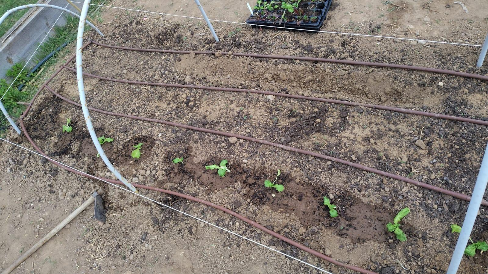
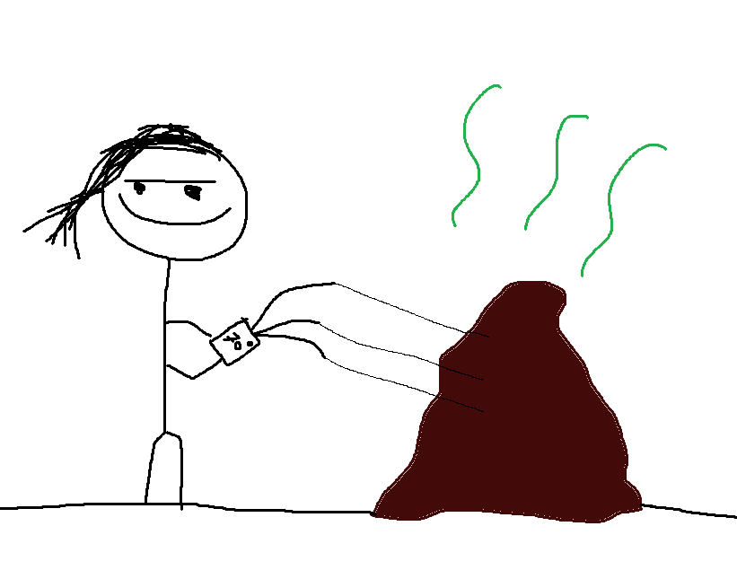
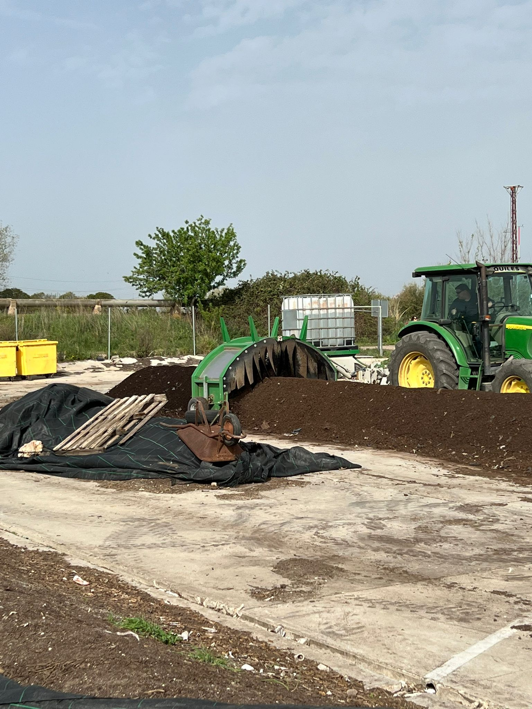
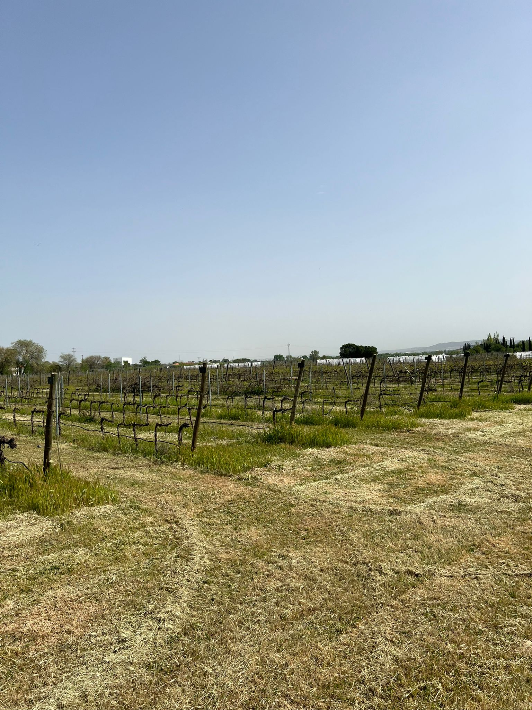
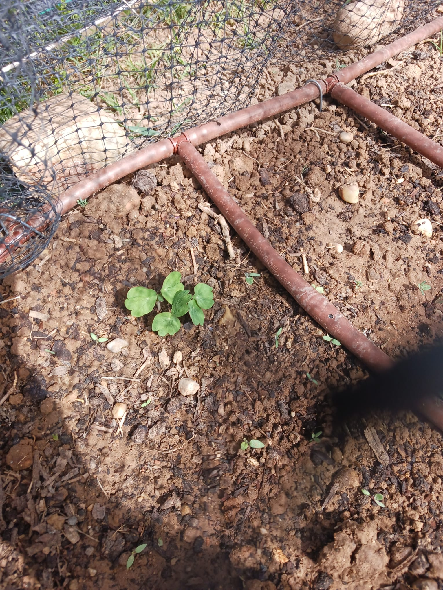

Nota: Esta entrada del diario ha sido redactada originalmente por mi compañero de bancal, Alberto.
Décimo día
El Jueves Santo fuimos Juan Carlos y yo a regar las plantas para celebrar la Última Cena de nuestro Señor y Salvador Jesucristo de Nazareth. Noel e Iván no vinieron porque tienen familias que les quieren con quien celebrar las fiestas. A pesar de que los jardineros nos dijeron de que el clima de la semana no sería caluroso y solo tendríamos que ir una vez, el suelo estaba muy seco. Al principio creíamos que habían empezado a brotar algunos cultivos, pero, oh, idiotas nosotros, no era sino nuestro enemigo jurado, la condenada grama. Al menos los tagetes y la caléndula iban bien. Aprovechamos también para poner los arcos de donde colgaríamos la red de protección en el tercio norte del bancal, donde pretendíamos plantar las lechugas y acelgas. Nos costó un poco comprender la técnica (lo que dice bastante de nuestra inteligencia, ya que consistía en doblar una vara y meterla en dos palos de bambú clavados a los lados del bancal), pero acabamos poniendo 4 arcos sin mayor dificultad. Por último, sustituimos una cebolla que estaba en las últimas por otra en mejor estado, terminando el día.
Undécimo día
A pesar de que pretendíamos ir el martes, Juan Carlos me obligó a perder 2 horas de sueño del último día de vacaciones para ir a regar el lunes. Noel e Iván tampoco vinieron porque ellos tienen libre albedrío. En realidad me viene bien salir un poco de casa, para variar, pero no se lo pienso admitir. En fin, larga vida al tirano del bancal 4. Fue un día corto, lo único destacable es que por fin estaban brotando lo que sin duda eran rabanitos. Lo malo es que algunos estaban brotando donde habíamos replantado la cebolla porque Juan Carlos tiene ADHD y se le olvidó que ya habíamos puesto semillas ahí, creándonos un dilema. También creíamos que estaba brotando la capuchina pero era una mala hierba.
Duodécimo día
El martes siguiente fuimos de 12 a 2+. Este día solo nos falló Iván, que tenía prácticas de TIG. Además del rutinario riego, este fue el día en el que finalmente plantamos las lechugas y acelgas que Juan Carlos había sembrado semanas atrás. Como somos buenas personas, las compartimos con el bancal 5, pero solo les dimos las que peor estaban, porque tan buenos no somos. Como no somos muy listos, plantamos las acelgas cada 10 centímetros en lugar de los requeridos 40, por lo que nos tendremos que cargar una de cada dos, pero lo estamos aplazando no tenemos la sangre fría para hacerle algo tan cruel a nuestros hijos. También nos dedicamos a quitar la grama y la maleza que nos estorbaba, con cuidado de no llevarnos algún brote útil sin querer, aunque seguramente alguno se cargaría alguna espinaca (no voy a decir por quién, pero probablemente rime con "oel", mida metro setenta y tres, y sea del Atleti).

Imagen 1: Lechugas plantadas y regadas. En las dos filas de encima irían las acelgas.
Después de ayudar a Aguirre a poner su red de protección (dice que su grupo le había abandonado), nos dedicamos a poner la nuestra. Al principio no llegaba por los lados porque los arcos eran muy altos, pero después de luchar un rato la acabamos poniendo lo suficientemente bien. También decidimos quitar los rabanitos que plantamos donde las cebollas, e identificamos definitivamente la capuchina que habíamos plantado. En retrospectiva, es sorprendente que tardemos como 2 horas y media en hacer solo eso, pero nos entretenemos bastante preguntándole cosas a los jardineros y a los demás grupos, por lo que yo no diría que es tiempo desperdiciado, aunque perdamos el tren de las 12:13.
Decimotercer día (este es largo)
Día de salida de campo al iMiDRA. Sorprendentemente, los 4 miembros del equipo teníamos compromisos ese día que nos complicaban la asistencia (asumiendo que ninguno mintió a los demás, lo cual puede ser demasiado inocente en este grupo de serpientes y traidores) pero Iván y yo decidimos hacer huecos en nuestras agendas para poder ir.
• PARTE 1: Taller de compostaje
Después de que los trabajadores nos llevaran en furgo a las instalaciones, las cuales al parecer llevan siendo cultivadas desde el neolítico, la visita empezó con una explicación del proceso de compostaje. Un ex-alumno de ambientales muy majo nos explicó que el compostaje es una imitación artificial de la descomposición de los restos orgánicos en condiciones termófilas y aerobias.
El compost se crea juntando restos verdes o húmedos con secos o estructurales. El componente húmedo son los restos de comida que en el iMiDRA obtienen de comedores escolares de algunos municipios de la comunidad de Madrid, pero a menudo viene con impropios inorgánicos. El componente seco puede ser grueso o fino, y suele estar hecho de materiales como la madera, que no se descompondrían en condiciones normales, por lo que se debe mezclar con el componente húmedo. El componente seco otorga al compost estructura, regula la humedad, sirve como fuente de carbono, y almacena oxígeno necesario para los procesos de descomposición.
Una vez se mezclan ambos compuestos, legalmente se debe alcanzar unas condiciones para poder distribuir el compost. Primero, el compost debe alcanzar una temperatura de 55º para garantizar que no sobrevivan patógenos infecciosos ni semillas no deseadas. Esto se mide con un triple termómetro que se pone en la zona de arriba, del medio, y abajo para obtener una temperatura media. La humedad no debe de ser ni muy alta ni muy baja, lo que se mide con el icónico "test de la croqueta", es decir, sacar un puñado de compost de dentro del montón y apretarla. Si no mantiene la forma, está demasiado seco. Si gotea, está demasiado húmedo. El compost se mantiene hasta que se llega a estas condiciones, siendo este volteado (y a menudo humidificado con agua de escorrentía) para homogenizarlo, oxigenarlo y triturarlo.

Imagen 3: El ex-estudiante de ambientales midiendo la temperatura con el triple termómetro (Se nos olvidó hacer foto)(Hecha por Alberto (Sin Inteligencia Artificial))

Imagen 4: Un tractor volteando y humedeciendo un montón de compost, en detrimento del sistema olfativo de los presentes.
• Parte 2: Los viñedos y el museo de variedades:
Después fuimos a una zona de viñedos, la cual era la mayor colección ampelológica de España y la segunda del mundo. Es curioso que las vides en España son en realidad dos plantas, ya que la raíz es un organismo separado. Esto se hizo intencionalmente cuando llegó de América una plaga llamada filoxera que, y cito directamente de la trabajadora del iMiDRA, "se cepilló [interpreto que se refiere a que mató, en lugar de a la otra acepción más soez] a la mitad de las vides de Europa desde la raíz". Como la filoxera no llegó a Canarias, sus variedades siguen siendo solo un individuo.
La colección de viñedos tiene dos grandes propósitos: El primero es el de la conservación. Se recogen germoplasmas de todas las variedades nacionales, y distribuyen variedades locales a quien les hagan falta. Esto es relevante ya que el siglo pasado se empezó a priorizar en España las variedades más competitivas, ignorando otras variedades y causando un declive en la diversidad genética en España, lo que se ve reflejado en el hecho de que España tenga unas 40 variedades en comparación de las 140 de Portugal. El segundo propósito de la colección es el de la realización de experimentos científicos. Presenciamos, por ejemplo, cómo se estaba investigando cómo afectaba el cambio climático a unas vides a las que habían rodeado de plástico para aumentar la temperatura unos grados, y también como varias filas de vides tenían distintas cantidades de hierba junto a ellas para evaluar el impacto de la cobertura vegetal. Para acabar la salida, fuimos a ver brevemente el museo ampelográfico, donde nos hablaron un poco más de las distintas variedades y practices de los viñedos.

Imagen 4: Los viñedos. No es muy buena foto.
Acabada la salida, decidimos pasarnos por el huerto, que nos pillaba medio de paso, y Juan Carlos, que estaba por la zona, ya había decidido pasarse a regar. A Iván le apetecía como una patada en los cabeza, pero él hacía ya que no iba al huerto un tiempo y una obligación es una obligación (a no ser que te atropellen, aparentemente). Juan Carlos regó y echó el abono que probablemente debíamos haber echado mucho antes. Cuando Iván y yo llegamos, Juan Carlos estaba poniendo paja bajo las fresas, para retener la humedad y evitar que los frutos tocaran el suelo. Nos contó que Adrián nos había regado el bancal antes porque estaba como la mojama. En general el huerto progresa bien. La capuchina ha crecido mucho, y las lechugas acelgas han enraizado bien con la excepción de 2, que el que las plantó las había dejado casi sin enterrar las raíces (no voy a decir quién fue, pero probablemente su apellido rime con "odero", viva en Vicálvaro, y su grupo sanguíneo sea B- ). Por desgracia, estamos a punto de declarar a las zanahorias como experimento fallido y las tendremos que sustituir por cualquier porquería que se nos ocurra. Y tras otros 20 minutos de hacerle perder el tiempo a Adrián con preguntas, dimos por terminado el día.

Imagen 5: La capuchina, que crece bien. No tenemos fotos del bancal completo porque somos algo dejados en ese aspecto.
REFLEXIONES:
- El riego frecuente es mucho más importante de lo que creíamos, todos los días estaba todo seco.
- Hay que ser más generosos esparciendo compost, mejor no quedarse corto.
- A pesar de ello, las plantas parecen crecer bien.
- Los rabanitos brotan muy rápido.
- Algo hemos hecho mal con las zanahorias, probablemente la siembra, o el riego, o el compostaje.
- Probablemente hayamos hecho mal varias cosas con las zanahorias.
- El mundo de la ampelología es mucho más interesante de lo que pensábamos.
- Si Juan Carlos dice que él escribe 2 semanas de blog, no hay que hacerle caso, porque luego tarda una semana más en hacer una entrada muy mediocre, y encima se olvida el último día y me toca a mí hacer de más, y eso que además el muy tirano no había ido el primer día, no sé por qué insistió tanto.